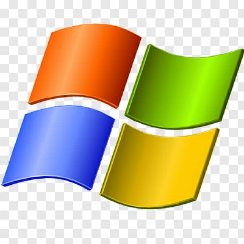
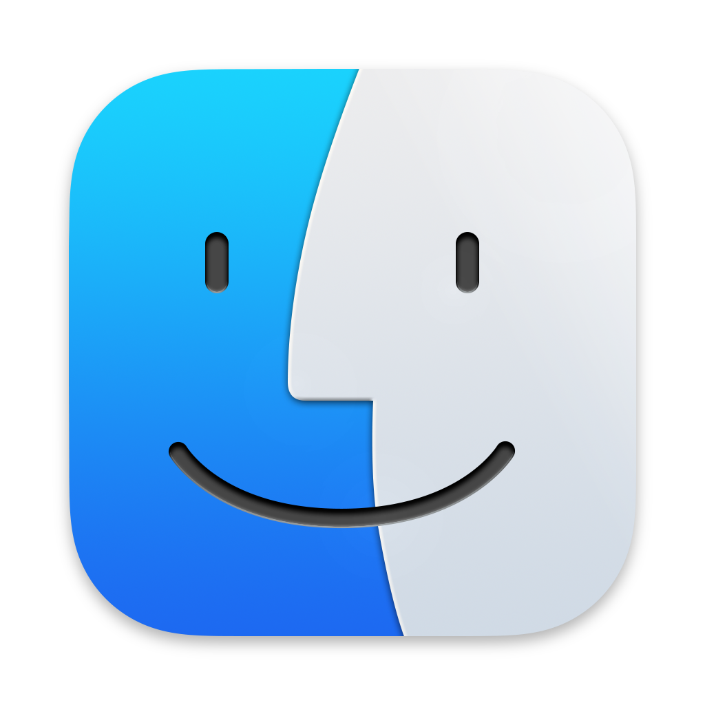
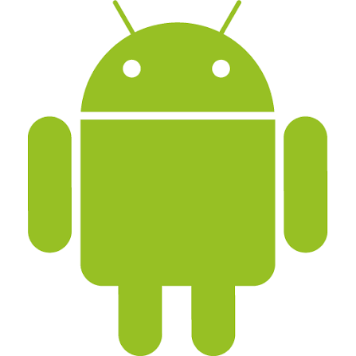
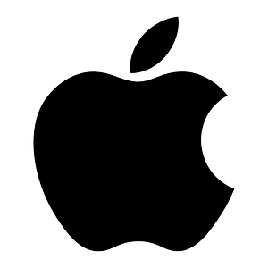
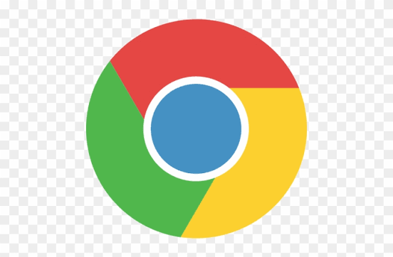

What is an Operating System (OS)?
An Operating System, also called an OS, is the main software that helps a computer or mobile phone work properly. It connects the user with the hardware and allows us to run different programs. Without an operating system, a computer cannot perform useful tasks. The operating system manages files, memory, software, and hardware. It also helps us use devices like the keyboard, mouse, printer, and internet easily. Every computer and smartphone needs an operating system to work.

Types of Operating Systems
- Windows
- macOS
- Linux
- Android
- iOS
- Chrome OS
Windows

Windows is an operating system developed by Microsoft. It is one of the most popular operating systems used on computers around the world. Many people use Windows at home, in schools, and in offices. Windows has a simple and user-friendly interface, making it easy for beginners to learn. It allows users to open applications, create documents, browse the internet, watch videos, play games, and manage files. It also supports a wide range of software and hardware, which makes it useful for many different tasks.
MacOS

macOS is an operating system developed by Apple. It is used on Apple computers such as the MacBook, iMac, and Mac Mini. It is known for its smooth performance, simple design, and security. macOS is easy to use and helps users perform many tasks like browsing the internet, creating documents, editing photos and videos, listening to music, and using different applications. It also works well with other Apple devices like the iPhone and iPad.
Linux

Linux is a free and open-source operating system. It was created by Linus Torvalds in 1991. Linux is used on computers, servers, and even some mobile devices. Many programmers and companies use Linux because it is fast, secure, and reliable. Linux allows users to browse the internet, create files, run different applications, and manage computer resources. There are many versions of Linux, called distributions, such as Ubuntu, Fedora, and Debian.
Android

Android is an operating system developed by Google. It is mainly used on smartphones and tablets. Many mobile phone brands, such as Samsung, OnePlus, Xiaomi, and Motorola, use Android on their devices. Android is easy to use and lets users make calls, send messages, browse the internet, play games, watch videos, and use different apps. Users can also customize their phones by changing wallpapers, themes, and widgets.
iOS

iOS is an operating system developed by Apple. It is used on iPhones and was designed to provide a smooth, fast, and secure user experience. It helps users run apps, make calls, send messages, browse the internet, and use many other features. iOS is known for its simple design, strong security, and regular updates. It also works well with other Apple devices, such as the iPad, Mac, and Apple Watch.
Chrome OS

ChromeOS is an operating system developed by Google. It is mainly used on Chromebooks. It is designed to be fast, simple, and easy to use. ChromeOS works well for browsing the internet, studying, watching videos, and using online applications. ChromeOS is lightweight and starts quickly. It also receives regular updates and has built-in security features to help protect users from viruses and other threats.